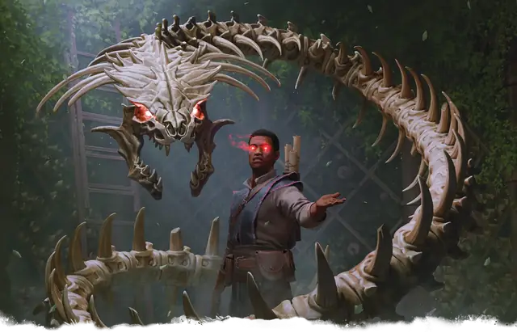

Костяная нага
Bone Naga
Большая Нежить, Нейтральная Злая

Класс Защиты 15 Инициатива +3 (13)
Хиты 65 (10к10 + 10)
Скорость 40 футов
| мод | спас | ||
|---|---|---|---|
| СИЛ | 15 | +2 | +2 |
| ЛОВ | 16 | +3 | +3 |
| ТЕЛ | 12 | +1 | +1 |
| мод | спас | ||
|---|---|---|---|
| ИНТ | 16 | +3 | +3 |
| МДР | 15 | +2 | +2 |
| ХАР | 15 | +2 | +2 |
Иммунитеты Яд; Истощение, Отравленный, Очарованный, Парализованный
Чувства Тёмное зрение 60 футов, пассивное Восприятие 12
Языки Общий плюс один другой язык
Опасность 4 (1 100 опыта; БВ +2)
Действия
Мультиатака. Нага совершает две атаки Укусом. Она может заменить любую атаку на использование Змеиного взгляда.
Укус. Бросок рукопашной атаки: +5, досягаемость 10 фт. Попадание: 10 (2к6 + 3) Колющего урона плюс 7 (2к6) Некротического урона.
Змеиный взгляд. Спасбросок Мудрости: Сл 13, одно видимое нагой существо в 60 футах. Провал: 13 (3к6 + 3) Психического урона, и цель становится Очарованной до начала следующего хода наги.
Сотворение заклинаний. Нага сотворяет одно из следующих заклинаний, не нуждаясь в Материальных компонентах (заклинательная характеристика — Интеллект, Сл спасброска заклинаний 13):
Неограниченно: Волшебная рука, Чудотворство
1/день каждое: Молния, Обнаружение мыслей, Приказ
Бонус мастерства +2
Среда обитания Подземье
Сокровища Реликварные
Костяная нага
Повелевающая разумом бессмертная змея
Наги бессмертны, но не неуязвимы — могущественная магия может оборвать нить их существования. Костяные наги — это ужасающие скелеты, созданные из останков наг, которые погибли от магической атаки или не успели возродиться после уничтожения. Они становятся нежитью после ритуала, проводимого культистами, юань-ти или мрачными призрачными нагами, и сохраняют свои магические способности, которые имели при жизни, в том числе жуткий взор, обвораживающий других существ.
Как правило, костяные наги подчиняются воскресившим их существам. Они служат им верными стражами и готовы поделиться всеми знаниями, собранными при жизни. Превращение в нежить влияет на безупречную память, которой костяные наги обладали при жизни: их воспоминания становятся фрагментарными и перемешиваются, как кусочки головоломки.
В редких случаях костяные наги не служат другим существам, а продолжают преследовать собственные цели. Большинство из них, обладающих свободной волей, — это злобные сущности, поднятые из останков призрачных наг. Однако бывают и воскрешённые сторожевые наги, сохранившие своё доброе начало, хотя и пребывающие в некотором замешательстве.